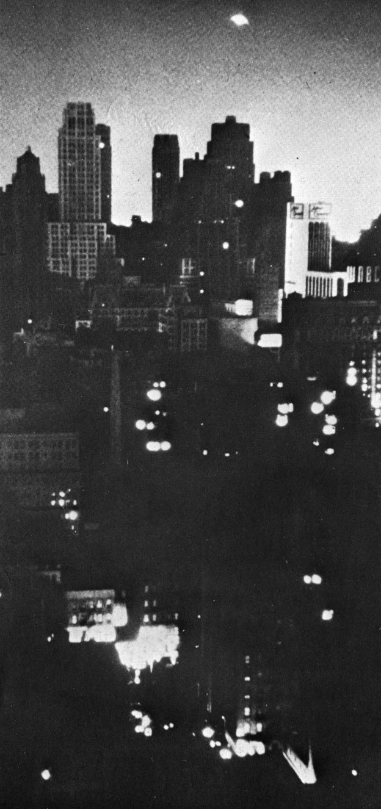

Observation à Middletown (Ohio)Cas
Blue Book n° 10066 non résolu.
Série de pannes de courant dans les Etats-Unis. Une autre panne touchera Bueno
Aires, qui, située dans l'hémisphère sud, est pourtant en été.
Hynek indique : Au lieu d'enquêter sur les
apparitions d'ovnis, on ferait mieux d'enquêter sur les gens qui les signalent.
Lueur observée à New York lors de la panne d'électricité de novembre

Au moment où ils sortent des bureaux, 30 millions d'habitants aux Etats-Unis dans la région nord-est du pays, de New-York au Maine, ainsi que
plusieurs autres millions au Canada se trouvent brusquement privés d'électricité,
provoquant une véritable catastrophe pendant une dizaine d'heures. Tout s'est éteint au moment même où l'ombre de la
nuit jetait son voile sur les régions touchées et où le scintillement des lumière progressait avec elle. Des villes
entières sombrent dans l'obscurité et l'insécurité. Des centaines d'américains restent bloqués dans les rames de
métro, d'autres dans les ascenseurs arrêtés en pleine course. Dehors, fort heureusement, la Lune brille. Télévision, lampes, appareils de
transmissions et appareils de radars ne fonctionnent plus. Contrairement à ce qui sera avancé, les bases militaires
elles-mêmes sont atteintes par le phénomène. Seul le faisceau des phares de voitures jette sur les zones d'ombre une
lumière hésitante ; dans la nuit les avions n'ont pour points de repère que ces files processionnaires de voitures,
dont certaines balisent les aérodromes. La défaillance de courant, de part et d'autre du Niagara, se propage en 4 mn
jusqu'à Buffalo, Rochester, Rome, Syracuse, Utica, Hamilton, Kingston et Toronto, c'est-à-dire les villes riveraines
ou voisines du lac Ontario. Puis c'est le tour des villes de la vallée du Mohawk et de la vallée de Hudson,
Saratoga, Troy, Schenectady, Albany. La panne s'étend à travers la Pennsylvanie, l'Etat de New York, le
Massachusetts, le Connecticut, le New Hampshire, le Vermont, le Maine et l'Ontario. La panne se propage dans 9 états
en 10 mn avant d'atteindre New York. Avec Boston, Augusta, Portland, New Haven, Providence, Hartford et tant
d'autres, la presque totalité de la Nouvelle-Angleterre est plongée dans l'obscurité, tout comme plusieurs grandes
villes penssylvaniennes. Sur toutes les régions touchées, l'angoisse s'installe. Le danger semble partout,
invisible, sur les 250 000 km carrés de territoires touchés. Par la suite, un témoin devait raconter : Ce n'était
plus le même monde. J'avais l'impression qu'il y avait des fantômes parmi nous. Jusqu'au lendemain à l'aube, des
milliers de témoins observent d'étranges lueurs qui passent dans le ciel, dans le silence le plus total. Des "boules
de feu" sont aperçues au-dessus de lignes à haute-tension, et des objets, bleus ou orangés, vus en divers points du
ciel qui définissent les limites de la zone d'obscurité. Dans les semaines qui suivent, aucune explication
satisfaisante ne peut être donnée au public. La presse, les personnalités civiles et militaires tentent d'expliquer,
sans y parvenir.
Lancement par une fusée Diamant A du satellite Astérix.